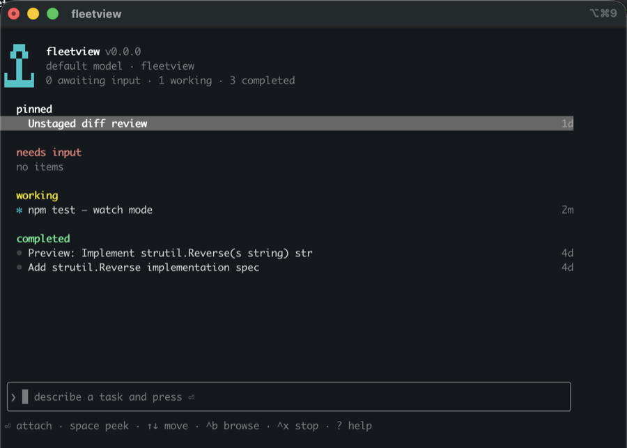

John Costa — Engineer, leader, builder.
I turn ambiguity into shipped products. I've spent over a decade in startups as an IC, tech lead, and engineering director, working on everything from site reliability to full-stack feature development. I go wherever the work needs me and partner across teams to find opportunities that wouldn't exist if no one was looking. Today I'm pushing AI-augmented building and contributing to open source tools that give back. More about me →
Writing
Recent thinking

The Job Search Where I Never Applied
Six inbound conversations, zero applications, and why the approach was worth it regardless of the outcome.

The AI Says It's Done. Make It Prove It.
Coding agents get lazy on long jobs: they do the fun part and round up to done. A deterministic state machine takes that call away from the model.

What I Built with Claude Fable 5
An audit of everything I own, a dictation app, and the division of labor that stuck

Your AI Setup Is a Depreciating Asset
The durable skill isn't building a better workflow. It's being willing to throw yours away.

How I Give Claude Code a Persistent Brain in Obsidian
Project state lives in your notes, the vault writes itself as you work, and it backs itself up offsite.

I Turned an Old MacBook Pro Into an Always-On Claude
A 2019 MacBook Pro, a Claude Max subscription, and a few open tools got me my own always-on, remote Claude without paying per token

If Your Decisions Live in DMs, You Don't Have an AI Strategy
The communication substrate every AI tool will run on

Not Every Business Win Is a Feature
Where engineering value lives at a mature B2B company

Your Team Needs a Code Review Canon
On shared standards, accountable review, and what AI changes about both

100 Merged PRs: What I Learned Contributing to Open Source with AI
On persistence, ownership, and shipping code in languages I don't know

From Raspberry Pi to 17-Container Homelab in Six Months
Replacing streaming subscriptions with a self-hosted media server, book library, and monitoring stack, built in a weekend

You Were Never Typing Code
The job was never typing. It was choosing the right pattern and reviewing what ships.

AI Is Bringing Developers Back to the Terminal. Ink Is Making It Beautiful.
How a 36K-star React renderer quietly powers your favorite CLI tools

Building a Self-Improving Trading System With AI
An AI agent that reviews its own performance, runs experiments, and deploys improvements. Autonomously.

Automate Your Life With Cron Jobs, GitHub Actions, and Telegram
Scheduled jobs, free tools, and a little AI can quietly run a surprising amount of your life

Your Portfolio Site Deserves a Pipeline
I rebuilt my personal site as plain HTML with zero frameworks. Then I gave it a real data pipeline so it never goes stale.

Claude Code Tips and Tricks
For AI-Assisted Engineering

The Biggest Bottleneck in Enterprise Software Isn't Technical
The Coordination Tax

Why Functional Programming Is the Most Important Skill for the AI Era
What type-driven design, declarative thinking, and domain modeling have to do with AI

How to Have a Career in 2026
A step-by-step guide for leveraging AI in any job function

What It Takes to Be a Software Engineer in 2026
AI made implementation easier. Here's how to stay valuable.
AI Drives, You Direct
How I finally started getting PRs merged

Why AI-Assisted Development Feels Like Engineering Management
How years of code review prepared me for working with Claude

AI-Assisted Home Automation in 2026
With Home Assistant and Claude Code
Modeling React State as a Finite State Machine
A modern approach using TypeScript discriminated unions and hooks
Open Source
Building in the open
Contributing to the tools developers rely on and the software that serves communities
Recently merged
fix(schedule): drive the month grid from the real week count
super-productivity/super-productivity#9623
fix(schedule): open schedule view scrolled to current time #9417
super-productivity/super-productivity#9545
fix(config): commit image-input fields on blur to stop per-keystroke ops
super-productivity/super-productivity#9596
who: do not abort on a stdout write error with -q
uutils/coreutils#13952
fix(task): keep selected task box within the list container #9540
super-productivity/super-productivity#9547
Projects
What I'm building
oss-autopilot
An AI-powered autopilot for managing open source contributions. It tracks PRs, responds to maintainers, discovers new issues, and helps maintain velocity. Built as a Claude Code plugin that makes sustained OSS contribution practical.

fleetview
A terminal roster for backgrounded coding agent sessions across opencode, claude, and copilot. Dispatch tasks, watch status, answer what the agents ask, attach to a session and detach back. Each session gets its own git worktree, with pull request state alongside it. Beta.
murmur
Local, offline voice dictation for macOS. Floating-button dictation with on-device speech recognition and a local LLM cleanup pass. Nothing leaves your machine.
SoundCompass
An iOS app that helps people with single-sided deafness localize sound using the iPhone's microphone array. GCC-PHAT direction estimation with an Apple Watch companion.
CoralReefAR
A self-hosted collaborative AR coral reef. Procedurally generated polyps synced over WebSockets, with an NFC entrypoint for visitors.